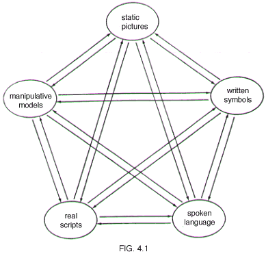
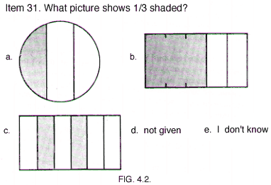
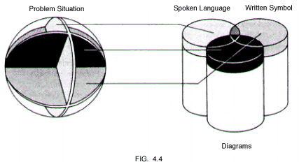
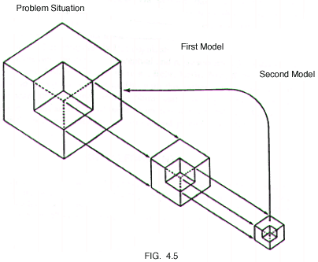

|
|||||
|
|||||
|
Richard
Lesh
|
|||||
|
This chapter briefly describes several roles that representations, and translations among representations, play in mathematical learning and problem solving. The term representations here is interpreted in a naive and restricted sense as external (and therefore observable) embodiments of students' internal conceptualizations-although this external/internal dichotomy is artificial. Comments in this chapter are based on three recent or current National Science Foundation funded projects on Applied Mathematical Problem Solving (AMPS), Proportional Reasoning (PR), and Rational Number (RN) concept formation. Past PN, PR, and AMPS publications (e.g., Behr, Lesh, Post, & Silver, 1983; Lesh, 1981; Lesh, Landau, & Hamilton, 1983) have identified five distinct types of representation systems that occur in mathematics learning and problem solving (see Fig. 4.1); they are: (1) experience?based "scripts"-in which knowledge is organized around "real world" events that serve as general contexts for interpreting and solving other kinds of problem situations; (2) manipulatable models-like Cuisenaire rods, arithmetic blocks, fraction bars, number lines, etc., in which the "elements" in the system have little meaning per se, but the "built in" relationships and operations fit many everyday situations; (3) pictures or diagrams-static figural models that, like manipulatable models, can be internalized as "images"; (4) spoken languages-including specialized sub languages related to domains like logic, etc.; (5) written symbols-which, like spoken languages, can involve specialized sentences and phrases (X + 3 = 7, A'UB' = (AnB)') as well as normal English sentences and phrases.  This chapter emphasizes that, not only are these distinct types of representation systems important in their own rights, but translations among them, and transformations within them, also are important. Item 31 (Fig. 4.2), taken from a written test on "rational number relations and proportions'' from our RN/PR projects, illustrates a "written symbol to picture" translation. The aim is to require students to answer the item correctly by establishing a relationship (or mapping) from one representational system to another, preserving structural characteristics and meaning in much the same way as in translating from one written language to another.  Item 29 (Fig. 4.3) is from the same ''relations and proportions" test as Item 31, but it was adapted from a recent "National Assessment'' examination (Carpenter et al., 1981). To answer item 29 correctly, the student's primary task is to perform a (computational) transformation within the domain of written symbols. We have found it useful to sort out ''between-system mappings" (i.e., translations) from ''within-system operations" (i.e., transformations) even though transformations and translations tend to be interdependent in reality. For example, RN/PR research suggests that students' solutions to item 29 (preceding) typically involve the use of spoken language (together with accompanying translations and transformations) in addition to pure written symbol manipulations (i.e. transformations). On the other hand, our studies also show that repeated drill on problems like 29 does not necessarily provide needed instruction related to underlying translations. For example, consider the following results. Educators familiar with results from recent ''National Assessments" (Carpenter et al., 1981) may not be surprised that our students' success rates for item 29 were only 11% for 4th graders, 13% for 5th graders, 30% for 6th graders, 29% for 7th graders, and 51% for 8th graders. Such performances by American students led to "Nation at Risk" reports from a number of federal agencies and professional organizations. However, success rates on the seemingly simpler
Item 31 were even lower: 4% for 4th graders, 8% for 5th graders, 19% for 6th graders, 21% for 7th graders, and 24% for 8th graders. On the translation item 31, only 1 in 4 students answered correctly! 43% selected answer choice (a); 4% selected (b); 15% selected (c); 34% selected (d); 3% selected (e); and 2% did not give a response. One major conclusion from our research is apparent from the preceding examples; not only do most fourth - through eight-grade students have seriously deficient understandings in the context of "word problems'' and "pencil and paper computations," many have equally deficient understandings about the models and language(s) needed to represent (describe and illustrate) and manipulate these ideas. Furthermore, we have found that these ''translation (dis)abilities" are significant factors influencing both mathematical learning and problem-solving performance, and that strengthening or remediating these abilities facilitates the acquisition and use of elementary mathematical ideas (Behr, Lesh, Post, & Wachsmuth, 1985; Post, 1986). Part of what we mean when we say that a student ''understands" an idea like "1/3'' is that: (1) he or she can recognize the idea embedded in a variety of qualitatively different representational systems, (2) he or she can flexibly manipulate the idea within given representational systems, and (3) he or she can accurately translate the idea from one system to another. As a student's concept of a given idea evolves, the related underlying transformation/translation networks become more complex; and teachers who are successful at teaching these ideas often do so by reversing this evolutionary process; that is, teachers simplify, concretize, particularize, illustrate, and paraphrase these ideas, and inbed them in familiar situations (i.e., scripts). To diagnose a student's learning difficulties, or to identify instructional opportunities, teachers can generate a variety of useful kinds of questions by presenting an idea in one representational mode and asking the student to illustrate, describe, or represent the same idea in another mode. Then, if diagnostic questions indicate unusual difficulties with one of the processes in Fig. 4.1, other processes in the diagram can be used to strengthen or bypass it. For example, a child who has difficulty translating from real situations to written symbols may find it helpful to begin by translating from real situations to spoken words and then translate from spoken words to written symbols; or it may be useful to practice the inverse of the troublesome translation, i.e., identifying familiar situations that fit given equations. Not only are the translation processes depicted in Fig. 4.1 important components of what it means to understand a given idea, they also correspond to some of the most important "modeling'' processes that are needed to use these ideas in everyday situations. Essential features of modeling include: (1) simplifying the original situation by ignoring "irrelevant'' (or ''less relevant") characteristics in order to focus on other ''more relevant" factors; (2) establishing a mapping between the original situation and the ''model"; (3) investigating the properties of the model in order to generate predictions about the original situation; (4) translating (or mapping) the predictions back into the original situation; and (5) checking to see whether the translated prediction is useful and sensible. Translation processes are implicit in a variety of techniques commonly used t investigate whether a student "understands" a given textbook word problem e.g., ''Restate it in your own words." ''Draw a diagram to illustrate what it's about." "Act it out with real objects.'' ''Describe a similar problem in a familiar situation." Or, techniques for improving performance on word problems' include: (1) using several different kinds of concrete materials to "act out" given problem situation; (2) describing several different kinds of everyday problem situations that are similar to a given prototype concrete model; or (3) writing equations to describe a series of word problems-delaying the actual solution until the student becomes proficient at this descriptive phase. Even though representation (or modeling) often tends to be portrayed a involving only a single simple mapping from the modeled situation to the mode (or to their underlying concepts, which might be characterized as the skeletons of external structural metaphors), our AMPS, RN, and PR research suggests that the act of representation tends to be plural, unstable, and evolving; and these three attributes play important roles to make it possible for concepts and representations to evolve during the course of problem-solving sessions. Here are some examples. In RN and PR research involving concrete/realistic versions of typical text book word problems, we have found that students seldom work through solution in a single representational mode (Lesh, Landau, & Hamilton, 1983). Instead students frequently use several representational systems, in series and/or in parallel, with each depicting only a portion of the given situation. In fact, man realistic problem-solving situations are inherently multimodal from the outset The following two pizza problems illustrate this point.
Neither of the preceding problems is a "symbol-symbol" or "word-word' problem. Instead, the "givens'' in both problems include a real object (i.e., piece of pizza), and a spoken word (to represent a past or future situation). Like many realistic problems in which mathematics is used, the situation in these two pizza problems is inherently multimodal. Each of the problems is a ''pizza word'' problem in which one of the student's difficulties is to translate the two givens into a homogeneous representation mode so that combining is sensible Not only may problems of the preceding type occur naturally in a multimodal form but solution paths also often weave back and forth among several representational systems, each of which typically is well suited for representing some parts of the situation but is ill suited for representing others. For example, in the two problems just given, a student may think about the static quantities (e.g., the two pieces of pizza) in a concrete way (perhaps using pictures) but may switch to spoken language (or to written symbols) to carry out the dynamic "combining" actions (Lesh, Landau, & Hamilton, 1983). Good problem solvers tend to be sufficiently flexible in their use of a variety of relevant representational systems that they instinctively switch to the most convenient representation to emphasize at any given point in the solution process. Figure 4.4 suggests one way that the act of representation tends to be plural; that is, solutions often are characterized by several partial mappings from parts of the given situation to parts of several (often partly incompatible) representational systems. Each partial mapping represents a ''slice" of the problem situation, using only part of the available representational system. It is not a mapping from the whole ''given" situation to only a single representational system.  The act of representation also may be plural in a second sense; that is, a student may begin a solution by translating to one representational system and may then map from this system to yet another system, as illustrated in Fig. 4.5.  In fact, for concrete or realistic versions of textbook word problems the actual solutions our students have tended to use often combine features depicted in both Fig. 4.4 and 4.5 preceding, as well as a third aspect of representational plurality; that is, a given representational system often appears to be related (in a given student's mind) to several distinct clusters of mathematical ideas. An example to illustrate this point occurred in the AMPS project when several of our students worked on the following "million dollar" problem.
One student who solved this problem began by using sheets of typewriter paper to represent several dollar bills. Then, he used a box of typewriter paper to find how many $1 bills such a box would hold-thinking about how large (i.e., volume) a box would be needed to hold one million $1 bills. Next, however, holding the box of typewriter paper reminded him to think about weight rather than volume. So, he switched his representation from using a box of typewriter paper to using a book of about the same weight. By lifting a stack of books, he soon concluded that, if each bill was worth no more than $10, then such a bag would be far too large and heavy for a single person to carry. For the preceding solution, the first representation involved a sheet of paper, which was quickly subsumed into a second representation based on the size of boxes (i.e., volume), which played a role in switching from conceptualizations based on volume to a conceptualization focused on weight. Clearly, the meaning(s) associated with each of these representations were plural in nature; and they evolved during the solution process. The unstable nature of the representations was reflected in the fact that when attention was focused on ''the whole situation" (or representation), details that previously were noticed frequently were neglected. Or, when attention was focused on one detail (or one interpretation), the student often temporarily lost cognizance of others. We have addressed the topic of conceptual and representational instability in other RN, PR, and AMPS publications (e.g., Behr, Lesh, Post, & Silver, 1983; Lesh, 1985), so we do not attempt to deal with this rather complex topic here. Instead, we want to stress the inherent plural and evolving nature the act of ''representation," because both of these characteristics are linked to the importance of translations in mathematical learning and problem solving. ACKNOWLEDGMENTS The research of the RN, PR, and AMPS projects was supported in part by the National Science Foundation under grants SED 79?20591, SED 80-17771, and SED 82-20591. Any opinions, findings, and conclusions expressed in this report are those of the authors and do not necessarily reflect the views of the National Science Foundation. REFERENCES Behr. M., Lesh, R..
Post, T., & Silver, E. (1983). Rational number concepts. In R. Lesh
& M. Landau (Eds.). The acquisition of mathematical concepts and
processes. New York: Academic Press. Lesh, R. (1981). Applied mathematical problem solving. Education Studies in Mathematics, 12 235-264. Lesh, R., Landau, M., & Hamilton, E. (1983). Conceptual models in applied mathematical problem solving." In R. Lesh, The acquisition of mathematical concepts and processes. New York Academic Press. Post, T. (1986). Research based methods for teachers of elementary and junior high mathematics: Boston: Allyn & Bacon. Post, T. R., Lesh,
R., Behr, M. J., Wachsmuth, 1. (1985). Selected results from the rational
number project. In L. Streefland (Ed.)., Proceedings of the Ninth International
Conference of Psychology of (top) |
|||||